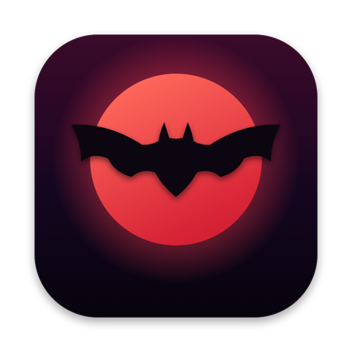

Medium swing
Open protocol — MIT
Vamp
An open protocol for media catalogs: a short figure — asset, revision, event, observation — kept so steady that any app, processor or agent can come in, play, and leave.
Read the contract Source, MIT · soon
The changes
Four bars, in order, round and round. Everything else in VAMP is a way of playing them.
-
Asset
A reference, never a copy. The original stays where it lives; the catalog knows it by the BLAKE3 digest of its exact bytes, and by a UUID that outlasts every rename and move.
id · original.blake3 · original.path
-
Revision
Each metadata change moves the revision forward. A write may name the revision it expects; if that is stale, the write is refused — no change, no event.
--expected-revision
-
Event
Every change is an event with a sequence number, committed in the same transaction as the change. Keep your place, ask for what came after, and you have heard everything, in order.
media_added · media_updated · media_trashed · representation_ready · observation_added · collection_updated …
-
Observation
What a processor hears and writes down: captions, tags, embeddings. Observations sit beside the original. They never touch its bytes and never advance its revision.
kind · model · value
The form
One authority keeps time. A single local catalog serializes every write; replicas follow its event stream and keep their place by sequence number. Read the stream as a chart and the bar numbers are the sequence.
Take it from bar 11
A consumer keeps the last sequence it heard and asks for everything after it. The cursor is exclusive, so nothing plays twice and nothing is skipped; events are retained, so a late arrival can start from the top.
$ vamp events --after 10 # 11, 12, 13, 14 …A late entrance
Bar 11 moved the asset to revision 2. A write that still expects revision 1 arrives after the downbeat: it is refused, and nothing changes — no metadata, no event, no confusion for anyone following the stream.
{"expected_revision": 1, "metadata": {"tags": ["moon"]}}
→ revision conflict: expected 1, current 2Open for solos
Whoever plays over the vamp reads the same four bars. Personnel:
- processors
- Any local executable you register. Argv only, never a shell. One request in on stdin, one response out on stdout. They add observations — captions, tags, embeddings — and never edit the catalog or its originals.
- agents
- Work the library from the command line;
vamp guideprints their manual. Research “explorations” file findings with provenance, then read your ratings back and go deeper. - apps
- Vampire, on Mac and iOS, is the first. The contract and its schemas are MIT, so the next one can be yours; using the protocol requires no purchase of anything.
Trading fours
register · ProcessorSpec
{
"name": "tagger",
"events": ["representation_ready"],
"command": ["/usr/local/bin/tagger", "--json"],
"input": "preview",
"output": "observation"
}call · ToolRequest on stdin
{
"protocol_version": "0.1",
"operation": "process",
"asset": { "id": "4be1…9c02", "revision": 2, … },
"input_path": "…/preview/e7a0…41d3.webp"
}response · ToolResponse on stdout
{
"observation": {
"kind": "tags",
"value": { "tags": ["moon", "bat", "night"] }
}
}Stale answers are dropped: the input’s digest must still match the asset before the result is applied, so a processor can never annotate bytes that have since changed.
Score and parts
The score is contract.json: identity, storage, mutations, events, processors — the semantics every player reads. The parts are generated JSON Schemas, one per root.
$ cargo run -p vamp-protocol --example schema- asset
- asset_view
- collection
- context
- contract
- duplicate_candidate
- error
- event
- job
- metadata_patch
- processor
- protocol_version
- smart_folder
- store_request
- store_response
- tag_group
- tool_request
- tool_response
Vampire — “Mac and iOS”

The library app we play over VAMP: your references in place, replicas over Tailscale, a browser clipper. A one-time purchase. Vampire